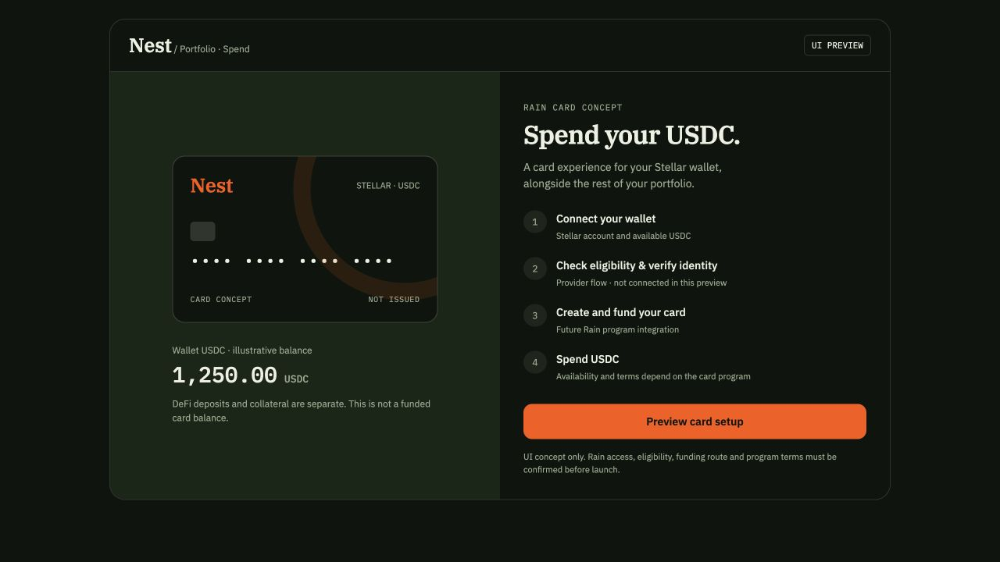

Nest / Design to implementation
One interface.
Explicit contracts.
Design ready / integrations pendingA consolidated specification for the supplied Trade, Vaults, Borrow, Research and Lab references, adapted into Nest’s visual system. Use the interactive preview to review composition; use these contracts to implement against the actual application services.
Identity selectedOriginal woven nest with a plain circular egg. The Stellar-core studies are exploratory.
10 requested viewsTwo Research views, Trade, vault list/detail, Borrow/positions and three Lab tabs, plus the retained Portfolio preview.
Backend boundaryRepository services and API routes are specifications. The application preset, deployed Worker routes and completed adapters remain pending.
This is a design handoff. Research uses dated captured observations. Financial workflows use labeled fixtures. No prototype action connects a wallet, signs, submits, activates a real rule or completes a real historical backtest.
Decisions that supersede older navigation baselines
| Decision | Implementation rule |
|---|
| Research has four top tabs | DeFi, RWAs, Markets and Venue map. Protocol and asset details are local routes; Saved is a utility and Automations belongs in Lab. |
| Lab is a new design area | Backtest / Set automation / History share one area. Backtesting remains a P1 backend capability; this request adds its design, not an implemented historical engine. |
| Six navigation groups | Design proposal: Research, Vaults, Credit, Trade, Lab, Portfolio. Preserve route compatibility: Earn → Vaults uses /earn; Credit remains /credit. Confirm final Lab production paths in the preset. |
| One long per-vault page | Reference images 3–5 become one product page with summary, performance, overview, identities, counterparties/fees/FAQ, process and risks, plus a persistent capability-driven action ticket. |
| P0 Trade is exact-input swaps | Use the shared chart and order-ticket layout. The center panel shows aggregate route evidence and exclusions rather than an invented orderbook; no long/short, funding or leverage controls in P0. |
Baselines: Existing UI decisions · Technical implementation guide · Repository implementation boundary · Design tokens
02 / References
What each reference contributes
Screenshots define visual structure. Product contracts and verified adapter capabilities define available actions. The mappings below preserve that distinction.
| Live reference | Design contribution | Scope |
|---|
| Terminal composition and chart/ticket hierarchy | Swap semantics remain Nest P0. |
| IRIS managing positions | Health monitoring, collateral changes, repayment and close-out tasks | IRIS-specific fixed-term and solver behavior stays conditional. |
| DefiLlama Stellar | Close structural port: chain summary, dominant history and protocol rankings | Stellar scope; source definitions and change scope preserved. |
| RWA.xyz Stellar | Network metrics, source taxonomy, league tables and asset identity | Dated authorized snapshot; no invented history or tradability. |
| / | Memory catalogue/reader and experiment organization | Backtests route resolved through live app navigation; inspection evidence is retained in the Lab contract. |
| Strategy/automation organization and review workflow | Nest uses blank typed authoring, explicit activation and reviewed proposals. |
Structured evidence: Research · Markets · Credit · Lab ·
03 / Shared shell and foundations
Keep the workspace consistent
| Layer | Contract |
|---|
| Header | 64px desktop shell: original Nest wordmark, six proposed navigation groups, search, network state, labeled Guardrails immediately beside Wallet. Preserve current route aliases. |
| Assistant | 380px right panel. Dock only when sufficient workspace width remains; below 1440px use an overlay. Below 768px use a full-height sheet. Provider errors do not remove manual forms. |
| Content grid | 12-column desktop grid with 24px padding/gaps, 44–52px data rows, 340px action ticket. At 1024px and below, filters become sheets and tickets follow context. |
| Mobile | At 375px, compact identity/network/Guardrails/wallet/menu header. Put route navigation in a labeled sheet or bottom navigation; keep the assistant launcher separate. |
| Typography | IBM Plex Serif 600–700 for titles; Sans 400–600 for controls/prose; Mono 400–500 and tabular figures for data, source labels and timestamps. |
| Color | Forest #0e150d; surfaces #151f14/#182617; cream #eef0e2; orange #ff5500 for action/selection. Use separate labeled status colors. Dark text on filled orange controls. |
| Readable secondary detail | Use #9aa890 or accessible subdued #829179. Original #71806a is for decorative/disabled detail. Fine surface borders are 12%/22% cream; essential input outlines use sufficient contrast. |
| Exact values | Client amounts are decimal strings. Canonical asset/issuer/SAC/contract and units stay visible. Backend fixed-point/raw-unit services determine bounds, not presentation Number arithmetic. |
| Data provenance | Carry source ID, provider observation/as-of, retrieval/capture time, network/ledger, units, definition, transformations and coverage. Retrieval time alone does not make data fresh. |
| Interaction accessibility | 44px targets, visible 2px focus ring with offset, native controls and table semantics, named dialogs and focus restoration, error/status announcements, reduced motion, text/symbol status encoding. |
Reusable component catalogue
AppShellNestWordmarkNetworkSwitchWalletMenuGuardrailsDrawerAgentPanelSourceStampFreshnessBadgePartialCoverageBannerAssetPickerDecimalAmountInputHorizonInputConstraintEditorProtocolTableMarketComparisonTableOpportunityRowChartPanelPlanSummaryAssetDeltaListFeeBreakdownRiskFactsWithdrawalTimingDisclosureExecutionTimelineReceiptLinkMemoryInspector
04 / Research
Research
Specified / implementation pendingTwo source-faithful analytical views. Preserve useful DefiLlama/RWA.xyz density while making source scope and execution availability explicit.
Inspect capital and protocol activity, then carry an amount-aware research context into comparison.
Contract: research.json · Specified / integration pending
Layout recipe
| Requirement | Specification |
|---|
| Top navigation | DeFi
RWAs |
| Header | Research / Stellar network eyebrow, 36px Serif page title, one-sentence description, dated source badge |
| Allocation comparison | Moved to the Chat welcome form: capital, asset and horizon. |
| Overview | 280px chain summary rail and remaining-width chart; 20–24px gap |
| Chain summary | Network identity and watchlist control
Provider chain DeFi TVL
Stablecoin value across USD-converted peg categories
24h DEX volume
Tracked 24h fees
Captured yield-pool and stablecoin counts
Source capture and source-time coverage |
| History | Dominant panel: metric title, latest recorded point, 1M/3M/1Y/All controls, TVL/DEX volume/Stablecoins, USD daily series, keyboard-accessible point inspection, visible source and caveat |
| Ranking | Immediately below the overview: full-width search/category/columns toolbar, dense protocol table, pagination and export |
Table and identity contract
| Requirement | Specification |
|---|
| Columns | Rank
Protocol and token/chain metadata
Category
Stellar TVL USD
1d change with scope note
7d change with scope note
Optional protocol-wide TVL
Research-only availability
Details |
| Default sort | Stellar TVL descending |
| Default filter | CEX excluded; retain all eligible DeFi categories |
| Pagination | 10 rows per page in preview; production uses server pagination |
| Identity | Protocol slug and source ID, not display name alone |
| Scope | The supplied percentage changes are protocol-wide across all chains. Do not relabel them Stellar-only. |
| Aggregation | Never sum overlapping parent/child, vault or access-route rows into chain TVL. |
| Unavailable | Nulls remain unavailable; do not infer market cap, per-protocol fees or missing periods. |
Interaction contract
| Control | Behavior |
|---|
| Research tabs | Switch between DeFi, RWAs, Markets and Venue map, preserving relevant local filters |
| Metric and period | Re-render actual collected historical series. Preserve date/units. Do not normalize to XLM without a verified matching historical price series. |
| Latest recorded point | The chart displays the latest point with its exact date and USD value. |
| Protocol search/category/sort | Update rows and result count, retain explicit empty state |
| Columns | Toggle protocol-wide TVL while keeping Stellar TVL and scope distinct |
| Details | Open read-only protocol panel with exact values, scope, source and verified outbound reference; financial action needs a supported registered market |
| Export | Download only current filtered snapshot rows with source timestamp and change scope |
| Watchlist | Preview-local toggle; production persistent save requires wallet ownership verification |
State matrix
| State | Required behavior |
|---|
| Loading | Keep page/metric dimensions stable with labelled skeletons; no placeholder zero values |
| Empty | Explain filter result and offer Reset or broader filters |
| Partial | Keep successful metric/table sections and enumerate source gaps |
| Stale | Readable last-known data with its actual source as-of/capture time; no fresh-quote claim |
| History missing | Keep metric panel and labelled unavailable chart state |
| Error | Show provider/retry reason at affected scope without replacing all successful rows |
| Source disagreement | Show source, definition and time of each differing total; never average incompatible totals |
| Wallet disconnected | Research and transient assistant remain available; persistent saves explain verification requirement |
Responsive behavior
| Requirement | Specification |
|---|
| Desktop | 280px overview rail, wide chart, full table |
| Tablet | 240px overview rail when space permits; stack below 800px |
| Mobile | Single column, chart redraws to actual width with fixed readable labels, ranking scrolls horizontally inside its container |
Accessibility
- Semantic table headers and numeric alignment
- Explicit control labels and source units
- Native inputs/selects/buttons
- Latest recorded chart point includes its date and USD value
- Dialog names, Escape and focus restoration
- Signs and words accompany financial colors
- No motion required to read data
Backend bindings
| Contract | Status | Required data / purpose |
|---|
| GET /api/research/overview | Specified in technical guide; application integration pending | network
metric definition
value and units
source ID
upstream observation/as-of where supplied
captured/retrieved time
coverage
transformation version
historical points and range |
| GET /api/research/protocols | Specified; exact pagination/filter/sort schema pending preset | slug
canonical network identity
name
category
Stellar TVL
all-chain TVL
percentage changes and scope
source provenance
available registered actions or exclusion reasons |
| GET /api/markets | Specified; integration pending | Resolve actual registered market capabilities before offering an action |
| POST /api/intents and POST /api/intents/:id/compare | Specified; integration pending | Validate canonical asset/decimal amount/horizon/constraints and compare executable native terms |
| GET/POST/DELETE /api/bookmarks | Specified; integration pending | Ownership-scoped persistent research saving |
Implementation acceptance
- Exactly two top Research tabs
- Search/category/sort/pagination alter real visible rows
- CSV carries timestamp/scope
- Protocol-wide changes are labelled as such
- Source totals are not row sums
- Actual historical points drive the chart
- No discovery data becomes an executable quote
- Works at 375/1024/1440px without page overflow
Inspect the Stellar RWA universe and its source-defined classifications without implying tradability.
Contract: research.json · Specified / integration pending
Layout recipe
| Requirement | Specification |
|---|
| Top navigation | DeFi
RWAs |
| Header | Network-scoped heading and source/as-of badge |
| Metrics | Eight provider network metric cells in a four-column/two-row grid |
| Composition and league | Two balanced panels: current distributed asset-class composition and the league table. Stack below 1100px. |
| Composition controls | Composition/History presentation control
Include stablecoins visibility control |
| League controls | Distributed/Represented/All
Platform/Asset class/Manager grouping |
| Assets | Full-width search/filter/sort toolbar with 10-row asset table pages and CSV |
Metric definitions
- Transferable RWAs
- Restricted RWAs
- RWA Holders
- RWA 30D Transfer Volume
- RWA Count
- Stablecoin Market Cap
- Stablecoin Holders
- Stablecoin 30D Transfer Volume
Table and identity contract
| Requirement | Specification |
|---|
| Columns | Asset name / ticker / network
Platform
Asset class
Provider total-value display
Provider holders display
Distributed/represented type
Source-reported Stellar identity |
| Sort | Total value descending
Name A–Z
Holders descending |
| Search | Asset
Ticker
Platform/issuer context
Asset class
Source contract label |
| Identity | Preserve exact source assetUrl and contractExplorerUrl. Asset names and non-interactive row cells navigate in the current tab to the same assetUrl linked on RWA.xyz. Explorer identity retains its own anchor. |
| Precision | Retain raw source display precision and absent values. Provider rounded league values are not exact transaction amounts. |
| Counts | 109 collected table rows and source RWA Count 84 are distinct coverage measures, never silently reconciled. |
Interaction contract
| Control | Behavior |
|---|
| Distributed/Represented/All | Use the matching collected league view and denominator |
| Group by | Switch platform, asset-class or manager source grouping; an empty represented-manager view is not a zero total |
| Composition | Plot source-reported current market shares, preserving rounded source precision |
| Hide stablecoins | Hide the stablecoin row without recomputing the source percentage denominator; disclose this behavior |
| History | Show explicit unavailable-history coverage state; no fabricated curve |
| Asset search/class/sort/pages | Filter actual captured rows and update result range |
| Asset row / name / identity | Asset row and name open the exact RWA.xyz asset URL in the current tab. Source contract anchor opens its exact explorer URL. No financial action is created. |
| CSV | Export filtered snapshot asset rows with access statuses, source URL, identity and observation time. |
State matrix
| State | Required behavior |
|---|
| Loading | Stable metric/table geometry with labelled placeholders |
| Empty filtered | Explain search/filter mismatch and preserve controls |
| Empty provider view | Say no rows in that selected source view; do not infer value zero |
| No history | Explain that this snapshot captured metrics/assets/league views but no historical series |
| Partial coverage | List unavailable fields/sections, keep available content |
| Stale snapshot | Show source as-of date and capture timestamp, not a live pulse |
| Unverified identity | Source explorer reference available, execution action disabled |
| Source error | Preserve previous snapshot with failure reason and last-good capture time |
| Eligibility unknown | Explain missing issuer/venue terms; no fabricated deposit or redemption CTA |
Responsive behavior
| Requirement | Specification |
|---|
| Desktop | Four metric columns, paired composition/league panels, full asset table |
| Tablet | Panels stack; two metric columns as needed |
| Mobile | Two metric columns, readable labels, no squeezed data; tables scroll in bounded containers and detail dialog fills available width |
Accessibility
- Semantic ranking and asset tables
- Text/symbol changes supplement color
- Direct category/percentage labels on composition marks
- Native labelled filters
- Read-only named detail dialog with Escape and trigger focus restoration
- No meaning relies on hover
Backend bindings
| Contract | Status | Required data / purpose |
|---|
| GET /api/research/overview | Specified; integration pending | Serve dated RWA network metrics, source definitions and coverage from the approved snapshot projection |
| GET /api/research/assets | Specified; exact list/detail schema pending preset | name
ticker
asset class
platform and manager
source-reported identity
network
distributed/represented classification
provider value display
holders
domicile
regulatory context
source URL
capture time
eligibility/redemption facts when verified
identity verification state |
| League view and composition schema | Response extension to research overview/assets needs confirmation | assetType
groupBy
source row/rank
provider RWA count
raw value/market-share displays
coverage note
source denominator definition |
| Historical RWA series | Unavailable in captured dataset; no endpoint invented | Add only after authorized data availability and display schema are verified |
| GET /api/markets | Specified; integration pending | Any future executable RWA action must resolve a verified registry asset and eligible venue first |
Implementation acceptance
- Exactly DeFi/RWAs top tabs
- All eight metric definitions stay distinct
- All 109 asset rows are searchable and paginated
- League controls select the actual collected view
- No-history and empty-provider views do not invent zeros or curves
- Source precision and count differences remain visible
- No source listing implies eligibility or redemption access
- No page overflow at 375/1024/1440px
05 / Trade and vaults
Trade and vaults
Specified / implementation pendingPreserve shared spatial hierarchy, then adapt content and controls to the supported swap and product lifecycles.
Inspect reference price context, compare executable routes at the actual input amount and review one exact-input swap.
Contract: markets.json · Specified / integration pending
Layout recipe
| Requirement | Specification |
|---|
| Desktop | Market header above OHLC chart / route comparison / 340px ticket. My positions sits below the chart and routes; the ticket spans both rows. |
| Medium | At workspace widths 901–1100px, route options and My positions move beneath the chart, with the ticket at right. At 900px and below, chart, routes, ticket and positions stack. |
| Mobile | Single column with a visible pair, price and source context. Controls meet 44px targets. No orderbook squeeze. Ticket follows chart and route context. |
| Assistant | Follow AppShell behavior: dock only at sufficient width; otherwise overlay so the chart, route region and ticket do not become three narrow columns. |
Component inventory
PairPickerMarketSummaryStripCandlestickChartIntervalSelectorRouteComparisonPanelExactInputSwapTicketDecimalAmountInputDirectionSwitchFeeBreakdownQuoteExpiryActivityTabsActionReviewSheet
Visible content and data
| Requirement | Specification |
|---|
| Header | Canonical pair
Network
Reference price
24h change
24h volume
Source timestamp |
| Chart | Pair and units
Historical interval
Observation coverage
OHLC candlesticks and volume; production requires real OHLC observations
Clear reference-price label |
| Route | Adapter / venues / hops
Expected output
Minimum received
Fee components
Size-dependent price impact
Observation time and provider expiry
Eligible and excluded routes with reasons |
| Ticket | Exact input amount as decimal string
Input/output asset identities
Spendable balance and server-derived Max
Expected output
Minimum received
Displayed maximum fees by asset
Saved policy revision / warnings
Effective quote expiry
Review action |
Interaction contract
- Selecting a pair or reversing direction obtains a fresh quote set for that exact input asset and amount.
- Amount, route, wallet, network or saved policy changes invalidate the prepared review; no stale quote remains signable.
- Route selection shows its own expected output, bounds and fees. Excluded routes remain visible with reasons.
- The interval changes historical chart context, never executable quote bounds.
- Activity tabs expose positions, pending workflows and confirmed swap history; a submitted action is never labeled confirmed.
- The preview's amount presets, route selection and refresh are local fixture interactions only.
State matrix
| State | Required behavior |
|---|
| Loading | Skeleton reference metrics and route progress; disable financial review until the quote set is valid. |
| Partial | Preserve successful routes; show unavailable/excluded routes and reasons. |
| No route | Explain pair, capacity, policy or liquidity constraints and offer explicit input edits. |
| Stale or expired | Show observation time and effective expiry; disable review/sign and refresh a new revision. |
| Wallet or network mismatch | Identify expected scope and invalidate the old prepared plan. |
| Awaiting signature | Retain exact token deltas, bounds, fees and expiry while the wallet is open. |
| Submitted or reconciling | Show transaction/receipt evidence and durable progress without claiming a fill. |
| Partial completion | Show completed effects and remaining exposure; recovery is separately reviewed. |
| Confirmed | Show actual input/output and charged fees from the confirmed receipt, then refresh positions. |
Accessibility
- Visible labels and units on all amounts
- Keyboard-operable pair, route and interval selection
- Native or correctly roled selection controls with selected state
- 44px targets on touch
- Status text and icons supplement color
- Chart accessible name/description and data alternative
- Focus moves into shared review and restores on close
Backend bindings
| Contract | Status | Required data / purpose |
|---|
| GET /api/markets | specified; pending implementation | Canonical eligible assets, pair capabilities and registered market state |
| Price-data adapter contract | adapter shape requires verification | Pair history with observations/coverage and real OHLCV or honest price samples; separate from trading adapter |
| POST /api/intents | specified; pending implementation | Persist an exact-input swap intent with decimal string amounts and canonical asset IDs |
| POST /api/intents/:id/compare | specified; pending implementation | Bounded concurrent quote set with eligible/excluded routes and ranking evidence |
| POST /api/plans and POST /api/plans/:id/prepare | specified; pending implementation | Immutable plan revision, policy checks, simulated exact effects and review digest |
| POST /api/plans/:id/approve and /submit | specified; pending implementation | Explicit approval binding, returned-payload verification and durable submission |
| GET /api/plans/:id/events | specified; pending implementation | Reconnecting SSE for submission, reconciliation and confirmed effects |
| GET /api/portfolio/:account | specified; pending implementation | Positions, liabilities, valuation time and workflow history |
| GET /api/policy | specified; pending implementation | Saved guardrail revision and non-overridable effective requirements |
Implementation acceptance
- Default pair XLM/USDC; all eligible verified assets remain selectable
- Both quote directions work
- No perp leverage, funding, long/short or synthetic orderbook
- Changing input invalidates review
- Every route exposes bounds, fees and expiry
- Real price samples are not fabricated candles
- Submitted and confirmed remain distinct
- 375/1024/1440px layouts preserve context and primary action
Filter and compare direct lending, curated vaults and campaigns before selecting a product-specific action page.
Contract: markets.json · Specified / integration pending
Layout recipe
| Requirement | Specification |
|---|
| Desktop | Category row above a 248px left filter rail and horizontally arranged opportunity rows. Sort bar spans the results column. |
| Row | Identity and curator; net yield/methodology; Stellar TVL/source; withdrawal condition; separate detail action. |
| Medium | Exit context can wrap under the identity rather than forcing small type. Filters become a sheet below 1024px. |
| Mobile | Stack row facts into two labeled columns; keep product identity first and the detail action full width. |
Component inventory
ProductCategoryTabsOpportunityFilterRailAssetFilterExitConditionFilterRiskProfileFilterOpportunitySortOpportunityRowSourceStampFreshnessBadge
Filters
- Search product/curator
- Canonical asset
- Direct supply / vault / campaign
- Withdrawal condition
- Risk profile: Lower / Moderate / Higher / Unrated
- Unrated state when risk evidence is absent
Content rules
- Net yield is accompanied by methodology; base yield and incentives remain separate on detail.
- Do not copy reference leveraged-stock, option or derivatives product categories into P0.
- Use approved markets/products across Blend, Templar, XOXNO, DeFindex, Upshift/Gami and Sentora.
- Provider, curator and underlying protocol are separate identities.
- An unavailable yield is labeled unavailable rather than zero or an invented APY.
- Campaign rewards are not annualized without an actual supported methodology.
Interaction contract
- Search, category, asset, risk profile and exit filters combine
- Sort by supported metric with unavailable values last
- Reset clears all filters
- Detail links preserve exact product identity
- Unsupported/paused product remains inspectable with execution disabled and a reason
- Production search/filter/sort/pagination is controlled and server-backed
State matrix
| State | Required behavior |
|---|
| Loading | Skeleton rows and result count |
| Empty | Explain active filters and offer reset |
| Partial | Retain successful products and show missing providers |
| Stale | Show source age; disable action where required |
| Unsupported | View-only detail with capability reason |
| Paused | Preserve existing position/exits where supported |
Accessibility
- Filter labels and input group names
- Result-count announcements on settled filtering
- Row detail link separate from action control
- Sticky identity and right-aligned numerals when table-like
- Visible text for exit/risk/data status
- Filter sheet restores focus
Backend bindings
| Contract | Status | Required data / purpose |
|---|
| GET /api/markets | specified; pending implementation | Approved product registry, capabilities, asset identities, market state and exit facts |
| Research/provider projection | actual response schema must be pinned | Source-observed yield, TVL, methodology and freshness; no new invented endpoint |
| POST /api/intents and /api/intents/:id/compare | specified; pending implementation | Amount-aware comparisons using the user's input rather than headline yield alone |
Implementation acceptance
- All filters combine and reset
- Sort/pagination preserve filter state
- No principal-protection guarantee; fixture risk labels are explicitly illustrative until a reviewed methodology exists
- Exit conditions appear before an action
- Provider, curator and underlying exposure are not conflated
- No permissionless deployment is enabled merely by protocol name
Combine user reference images 3–5 into one page that explains the product, its position and the full supported entry/exit lifecycle.
Contract: markets.json · Specified / integration pending
Layout recipe
| Requirement | Specification |
|---|
| Desktop | Main content with a 340px right action ticket; long-page sections retain one product context. Ticket sticks while reviewing on desktop. |
| Ordered sections | Back link and product identity
Description and metrics
Yield/product-model/withdrawal tags
Performance or position history
Overview / exposure / position facts
Expandable contract and asset identities
Counterparties / fee structure / FAQ
Numbered product process
Market, protocol and execution risks |
| Mobile | Ticket moves below product context rather than squeezing beside it. Context panels and process/risk groups stack. Keep withdrawal disclosure visible before the review action. |
Component inventory
ProductHeaderYieldBreakdownProductModelMetricsStickyActionTicketWithdrawalTimingDisclosureShareHistory or PositionHistoryPositionOverviewExposureBreakdownContractIdentityDisclosureCounterpartyListFeeScheduleFAQProductProcessRiskGroupsRedemptionStatusCampaignLotTableActionReviewSheet
Product models
| Requirement | Specification |
|---|
| Direct supply | Providers: Blend
Templar
XOXNO
Accounting: Venue-native balances and collateral/debt effects; no universal vault-share or health-factor assumptions
Actions: Supply
Withdraw
Collateral management when supported
Exit: Available liquidity, native collateral constraints and venue-specific queue/settlement |
| Share vault | Providers: DeFindex
Upshift/Gami
Sentora evergreen USDC via Upshift
Accounting: Verified share decimals/conversion and net asset value; receipt and backing are not double-counted
Actions: Deposit
Redeem/withdraw
Claim after settlement where supported
Exit: Actual product request/settlement/claim model, fees and earliest availability |
| Campaign | Providers: Sentora XLM/USDC/PYUSD campaign deployments
Accounting: Separate deposit lots, accrued and claimable rewards, release conditions and forfeiture
Actions: Deposit
Partial withdrawal
Reward claim when supported
Exit: Selected-lot timing and exact rewards forfeited; no assumed shares or instant redemption |
Withdrawal timing
| Requirement | Specification |
|---|
| Placement | Beside deposit amount, above the review action, and repeated in the shared prepared review. Never only a tooltip or collapsed technical section. |
| Fields | Immediate / scheduled / variable / unknown timing
Lockup
Cooldown and start trigger
Queue and request/claim steps
Earliest availability or source-supported range
Collateral/debt release conditions
Campaign reward forfeiture
Source and observation time |
| Behavior | Refresh on product, amount and preview changes. Unknown and variable timing remain prominent. Material changes require a new review. |
Interaction contract
- Product identity is selected from the exact opportunity row; direct navigation resolves the canonical opportunity ID.
- Deposit/Withdraw/Claim controls appear only for adapter-supported capabilities and the current product state.
- Switching action updates required amount units, disclosures, fee components and position effects.
- Changing amount invalidates prepared data and requires new checks/simulation.
- Delayed redemption exposes request amount, pending state, actual earliest availability and separately available settlement/claim action.
- Campaign withdrawal selects lots and shows accrued versus claimable versus forfeited rewards.
- FAQ and contract details are expandable; essential exit facts remain visible.
- The preview product selector is a design-review convenience, not a proposed production control.
State matrix
| State | Required behavior |
|---|
| Loading | Product facts/ticket skeleton; no stale action |
| No position | Public product research available before wallet connection; private position fields gated |
| Partial data | Successful facts remain with missing source reasons |
| Deposit preview | Exact underlying amount, share/position changes, fees and exit disclosure |
| Request redemption | Amount and current redemption model |
| Settlement pending | Existing request, evidence and availability; no duplicate retry |
| Claimable | Show only confirmed available claim amount |
| Campaign partial withdrawal | Selected lots and exact reward forfeiture |
| Expired | Invalidate old action and refresh |
| Paused | Block new entries while preserving supported exits and visibility |
| Confirmed | Use actual receipt effects and refresh positions |
Accessibility
- Product page has one h1 and ordered section headings
- Action tabs expose selected state and labels
- Amounts carry asset/unit/identity context
- Persistent review action does not hide disclosure
- FAQ uses native details/summary
- Queue/error/risk meaning includes text and icon
- Native review modal focus behavior
- 44px mobile targets and reduced motion
Backend bindings
| Contract | Status | Required data / purpose |
|---|
| GET /api/markets | specified; pending implementation | Exact approved product, adapter capabilities, canonical assets, curators, underlying exposures and exit-model facts |
| GET /api/portfolio/:account | specified; pending implementation | Shares/native balance, liabilities, campaign lots, pending requests and claimable state |
| Provider/product history adapter | must bind to actual verified schema | Share-price history only for issuing products, otherwise honest venue/campaign position history with coverage |
| POST /api/intents and POST /api/intents/:id/compare | specified; pending implementation | Product-native deposit, withdraw, redeem or claim intent with exact typed assets and decimal strings |
| POST /api/plans, /prepare, /approve, /submit and GET /events | specified; pending implementation | One immutable prepared-review-sign-submit-reconcile lifecycle, including per-deposit exit disclosures and exact fee maxima |
Implementation acceptance
- All three reference-detail images are represented on one page
- Every supported deposit shows withdrawal timing before approval
- No universal leverage/health/share-price fields are copied across unlike products
- Claim only appears where supported
- Campaign accrued/claimable/forfeited rewards remain distinct
- A queued request stays visible through reload/reconciliation
- Receipt shares/backing are not double-counted
- Actual product scope and contract identities are verified before execution
06 / Borrow and manage positions
Borrow and manage positions
Specified / implementation pendingIRIS-style progressive intent capture plus venue-native management. Compare before connection; prepare and sign only after verified ownership.
Capture a complete borrowing intent and compare integrated venues at the same collateral, debt, horizon and constraints.
Contract: credit.json · Specified / integration pending
Layout recipe
| Requirement | Specification |
|---|
| Page header | Credit label, serif title, concise purpose and contextual Ask Nest action |
| Secondary navigation | Borrow
My positions
Supply opportunities link |
| Desktop | Centered two-panel builder with maximum combined width 1180px and 24px gap. Left term rail / right editor use 1.15fr / 0.85fr. The comparison table retains the workspace width. |
| Term rail | Five 68px selection controls, 12px radius, active orange outline; selected values remain visible. Compare and Reset follow the rail. |
| Editor | Minimum 540px desktop study, 24px padding. Field-specific asset identity, amount and explanatory content. Apply action at the bottom. |
| Comparison | Dense table preserving all three venue results and exclusion reasons. Numeric values right aligned, provenance/assumptions below. |
| Mobile | Below 801px of workspace, stack the term rail and editor with a maximum width of 640px. Comparison retains contained horizontal scrolling. |
Inputs and validation
| Field | Type / content | Validation |
|---|
| Collateral | Type: AssetRef + decimal string
Content: Asset identity and network
Exact amount
Observed valuation and price source
WithdrawalTiming disclosure | Positive decimal, registry-resolved canonical asset, account balance/reserves/capacity at preparation. No silent asset substitution. |
| Debt | Type: AssetRef + decimal string
Content: Desired debt amount
Native initial LTV derived from adapter terms
Amount-aware capacity | Do not reduce requested debt to make a venue fit. Exclude unsupported pairs, insufficient capacity and invalid health separately. |
| Horizon | Type: Integer comparison days
Content: Comparison horizon
Rate type and actual maturity if supported | A comparison horizon does not promise a fixed rate, fixed maturity or guaranteed exit. |
| Max rate | Type: Decimal APR ceiling / normalized strict constraint
Content: Exact ceiling
Current-quote-derived presets when available | Preserve APR/APY semantics. Editing this form does not write saved Guardrails. |
| Venue | Type: best or registered venue ID
Content: Blend
Templar
XOXNO | Eligibility is specific to account, network, asset, market and current capability, not protocol name alone. |
Comparison columns
- Venue / market identity
- Borrow APR and fixed/floating type
- Estimated horizon interest and cost methodology
- Fees separately by asset
- Initial LTV, maximum initial LTV and liquidation parameters
- Native risk metric and units/direction
- Debt capacity and settlement mode
- Observation time, expiry and execution availability
- Review terms action or explicit exclusion reason
Interaction contract
- Selecting a term focuses the corresponding right editor without dropping the other selected terms.
- A field-specific Apply validates its draft and updates the intent. Invalid text remains visible with an inline error and cannot poison the last valid comparison.
- Changing any applied input invalidates the old executable quote set. A real implementation immediately disables stale Review actions while recomputing.
- Compare venues requests a bounded concurrent quote set for the exact inputs. Timeouts and exclusions remain visible.
- Picking a venue result creates a typed proposal; it does not sign or submit.
- Supply opportunities navigate to the direct-supply/vault discovery view rather than changing a borrow into a supply silently.
- Reset clears only the local form/comparison draft; it does not alter saved policy or positions.
State matrix
| State | Required behavior |
|---|
| Initial | Editable terms and comparison explanation before wallet connection |
| Validating | Inline field errors; preserve draft and last valid comparison |
| Loading | Skeleton result rows and bounded progress; no previous quote remains actionable |
| Partial | Successful venues retained, unavailable venues show reasons and observed coverage |
| No eligible venue | Explain capacity/pair/constraint failures; offer explicit input changes |
| Quote expired | Disable review and request a new revision |
| Wallet required | Allow research comparison; connect and verify wallet before preparing a real plan |
| Network or wallet change | Invalidate old prepared review and load new account/network context |
| Provider failure | Manual form remains available; show retry or partial coverage |
All financial values are explicit fixtures. Local rate/amount editing recalculates illustrative interest/capacity and native-risk displays only; no wallet/API/model calls are made. JavaScript Number is used only for fixture presentation. Real financial math must use exact raw-unit/fixed-point services.
Implementation acceptance
- The five intent terms stay visible while any editor is open.
- Guest users can compare without supplying a fabricated account ID.
- Blend, Templar and XOXNO use identical requested collateral/debt/horizon inputs.
- Insufficient capacity produces an exclusion instead of silently changing debt.
- Rates, fees, horizon assumptions, source timestamps and exit conditions are explicit.
- No common health number is invented across incompatible native metrics.
- Review uses the shared immutable-plan review with Guardrails revision and deposit withdrawal timing.
Monitor lending positions and execute supported collateral, repayment and exit actions with venue-native validity and clear settlement state.
Contract: credit.json · Specified / integration pending
Layout recipe
| Requirement | Specification |
|---|
| Summary | Four metrics: confirmed collateral, outstanding debt, net credit value and separately tracked pending workflows, with valuation time. |
| Desktop | Flexible left content for open positions, selected-position health and details; 340px sticky action ticket right. |
| Position table | Venue/market/account identity, collateral, debt, native risk, Manage action. Keep account IDs separate from wallet and market IDs. |
| Health panel | Selected venue-native metric, liquidation boundary, valuation/debt/rate facts, actual maturity where supported, source/as-of time. Never present configured warnings as chain validity boundaries. |
| Ticket | Add collateral, withdraw collateral, repay, repay & close. Amount, before/after deltas, resulting native risk, withdrawal timing for additions, eligibility reason and shared-review action. |
| Below | Pending external workflow timeline, conditional term/close-out details and activity/receipt history. |
| Responsive | Below 1100px in the specimen (1024px production baseline), ticket stacks under context; below 768px metrics become 2 columns and timelines wrap in order. |
Venue-specific behavior
| Requirement | Specification |
|---|
| Blend | Use pool-native accounting and risk/receipt conversions. No backstop or recursive leverage in P0. |
| X o x n o | Bind wallet, NFT-backed lending account, spoke, hub and market IDs separately. Reverify current account ownership before prepare and submit. No P0 migration, NFT transfer, flash loan or looping. |
| Templar | Preserve Stellar-origin funding, protocol authorization, external settlement and debt delivery as distinct receipts. Funding confirmation does not mean borrowing completed. Queued supply withdrawals have actual request/queue/execution/cancellation states. |
| Term market | Only when returned by the adapter: fixed/floating type, maturity, overdue rate, grace end, liquidation phase, full-term interest/early-close rule and settlement/repayment state. IRIS reference values do not supply Nest terms. |
Management actions
| Action | Typed inputs / preview | Validity rule |
|---|
| add-collateral | Intent: add_collateral
Inputs: accountId
marketId
input AssetRef + exact amount
Preview: Collateral before/after
Native health before/after
Approved fee maxima
WithdrawalTiming | Check ownership, asset/network identity, balance/reserves, market capability and post-action health. Show that collateral release remains conditional on debt, health and liquidity. |
| withdraw-collateral | Intent: remove_collateral
Inputs: accountId
positionId
amount AssetRef + exact amount
Preview: Collateral reduction
Debt unchanged
Post-action native risk
Withdrawable amount and source | Disable when liquidatable or a venue/grace restriction applies, or when the projected action breaches chain/venue validity. Available amount comes from the adapter; a generic Max cannot introduce an unsupported withdraw-all sentinel. |
| repay | Intent: repay
Inputs: accountId
positionId
input AssetRef + exact amount
Preview: Spend
Debt reduction
Debt rounding
Native health improvement
Accrued interest/fees | Support partial repayment only where the market supports it. Adapter determines exact rounding and close-out behavior. |
| close | Intent: repay followed by supported collateral release steps
Inputs: accountId
positionId
explicit full-close objective
Preview: Exact total repayment
Principal/accrued/term/overdue cost breakdown where applicable
Collateral release amount and timing
Separate transaction/settlement steps | A generic positive repayment must not silently become repay-all. Full close and collateral release may require multiple separately reviewed steps. Do not assume early repayment reduces term interest, nor assume full-term interest without market evidence. |
State matrix
| State | Required behavior |
|---|
| Healthy | Show native metric and actual venue boundary; provide supported actions |
| Warning | Show an accepted policy warning independently of any blocking minimum; require fresh preview |
| Liquidatable | Withdrawal disabled with reason; surface supported add-collateral and repay/exit paths |
| Matured or grace | Only for supported terms; show exact deadlines/costs and permitted actions |
| Pending signature | Keep reviewed exact changes visible; stale/mutated response rejected |
| Submitted reconciling | Show receipt/hash and progress without claiming success |
| Partial completion | Retain completed effects and remaining exposure; new review for a permitted recovery action |
| Confirmed | Display actual token/debt/collateral effects and refresh positions |
| No positions | Explain wallet/ownership requirements and link Borrow/Supply without fabricated balances |
| Stale position | Show last observation and disable execution until refreshed |
Implementation acceptance
- Confirmed collateral, liabilities and net value use one valuation time and do not count receipts plus backing twice.
- Pending funding/workflows are tracked separately from confirmed borrowed assets and collateral totals.
- Every position exposes supported exit actions and explicit unavailable reasons.
- Liquidatable and unsafe post-action withdrawals cannot reach signing.
- Collateral additions show withdrawal duration/restrictions before approval.
- Repay and close display actual venue costs rather than assuming IRIS mechanics.
- A Templar funding receipt cannot mark borrowing complete.
- XOXNO ownership, native amount semantics and protocol IDs are revalidated.
- Every action uses the same prepared-plan review, expiry/policy binding and confirmed receipt reconciliation.
Credit-wide accessibility
- Term selections are native buttons with aria-pressed and a named target editor; keyboard order follows visual order.
- Every amount, asset and range control has an accessible name plus unit; errors are associated and announced.
- 44px targets, visible focus and readable subdued labels; no status relies on color alone.
- Comparison and position tables use header scopes, right-aligned financial values and contained overflow on narrow screens.
- Review and assistant modal focus are supplied by the shared shell with focus restoration.
- State changes announce summaries without announcing every slider tick; reduced motion disables smooth scrolling.
07 / Backtest, Set automation and History
Backtest, Set automation and History
Specified / implementation pendingOne Lab area with three distinct responsibilities. Context, historical experiments and durable monitoring share navigation while retaining separate authority and lifecycle.
Inspect and manage wallet-scoped recommendation memory, evidence, notes and paper hypotheses without changing financial authority.
Contract: lab.json · Specified / integration pending
Layout recipe
| Requirement | Specification |
|---|
| Desktop recipe | Page title and Memory/Backtests/Automations tabs; graph and source-note reader in two columns; searchable note list; accepted/proposed preference and policy-boundary disclosure. |
| Responsive | Two columns on wide workspaces; graph, reader and list stack below 1024px or container width 850px. Graph can pan internally on narrow screens; the complete note list is the accessible alternative. |
Current prototype behavior. The specimen uses local page-session memory and no service persistence.
Visible content and data
| Requirement | Specification |
|---|
| Types | Accepted preferences
Bookmarks
Rejected recommendations
Decision/action notes
Paper-strategy hypotheses
Proposed preferences awaiting acceptance |
| Authority | Memory explains recommendations. It cannot accept policy, sign, submit, mutate a plan or cancel a running automation. |
| Scope | Verified wallet plus network where applicable; guest memory/transient conversations are not silently persisted. |
| Relationships | Graph/list edges are evidence and context links, not execution permissions or invented confidence scores. |
Interaction contract
- Select an item to open a readable detail panel with provenance and related records.
- Edit changes a local draft; explicit Save creates the accepted preference/bookmark revision through the appropriate service.
- Accept a proposed preference only through the explicit preference-proposal acceptance path.
- Reset asks for exact scope and removes only supported recommendation-memory records; policy revisions, receipts and accepted automations remain intact.
- Export includes permitted owned memory records, schema version, revisions and provenance, with sensitive connector material excluded.
State matrix
| State | Required behavior |
|---|
| Empty | Explain that no accepted memory exists; offer a note or bookmark rather than fabricated history. |
| Proposed | Clearly separate an inferred proposal from an accepted preference. |
| Unsaved | Keep the edited draft and Save/Cancel controls. |
| Conflict | Preserve draft and identify the newer saved revision. |
| Reset confirmation | State the exact records/scope to reset and what persists. |
| Export unavailable | Explain pending capability; do not fake a completed export. |
| Source unavailable | Retain the note with a missing-source marker and original capture time. |
Accessibility
- Graph content also has a list/reader alternative.
- Edit/reset/export controls are named and keyboard accessible.
- Deletion/reset confirmation restores focus and announces result.
- Long notes wrap; provenance never requires hover.
Backend bindings
| Contract | Status | Required data / purpose |
|---|
| GET/PATCH /api/preferences | Specified; service implementation pending | Read and explicitly change soft preferences |
| POST /api/preferences/proposals/:id/accept | Specified; service implementation pending | Accept exact reviewed proposal |
| GET/POST/DELETE /api/bookmarks | Specified; service implementation pending | Saved research and strategy links |
| No endpoint assigned | Schema to finalize | Memory graph/note aggregation, notes editing, reset/export and pagination are not fully specified endpoints. Do not invent paths. |
| GET /api/policy | Specified; read-only in memory | Policy reference only; writes remain explicit Guardrails Save |
Implementation acceptance
- Accepted/proposed/saved/unsaved states remain distinct.
- Guest content is not saved without verification and explicit intent.
- Memory edits cannot change Guardrails or approve an action.
- Reset does not delete financial receipts, policy audit or accepted automations.
- The same record is readable without using the graph.
Prototype component inventory
LabTabsMemoryOverviewMemoryGraphMemoryNoteReaderMemorySearchPreferenceProposalMemoryExportResetMemoryScope
Required visible states
Guest transient context / connect to saveLoadingOwned notesNo matching notesProposed preference awaiting acceptanceEdit draftVersion conflictExport/reset in progressSource unavailable
Lab · Backtests
/lab?tab=backtests · design route proposal
Configure a reproducible historical strategy experiment and inspect results, assumptions and missing-data coverage. Backtesting is a requested design area; its execution backend remains P1.
Contract: lab.json · Specified / integration pending
Layout recipe
| Requirement | Specification |
|---|
| Desktop recipe | 320px experiment configuration rail beside post-cost results and benchmark chart; event audit; frozen evidence and compatible saved runs below. |
| Responsive | Configuration stacks before results below 768px/container 850px. Charts redraw at measured width with readable units; audit tables scroll inside their own region. |
Current prototype behavior. Run sample computes a deterministic allocation-band example over 16 fixed invented XLM/USDC prices. Signal at one observation, fill at the next, bounded notional, modeled costs. Page-session comparison/export only; not a historical run or permission to trade.
Inputs and validation
| Field | Type / content | Validation |
|---|
| Strategy rules | Type: Reviewed supported DSL, not arbitrary executable code
Content: Entry/exit conditions
Sizing
Venue/asset identity | Reject unsupported ideas; never silently substitute an invented simulation. |
| Dataset/window | Type: Immutable dataset ID/version and UTC start/end
Content: Point-in-time rates/prices/liquidity
Missing intervals
Warm-up coverage | No look-ahead. Candles alone cannot model lending/LP state. |
| Costs/benchmark | Type: Explicit fees/slippage/settlement assumptions and benchmark
Content: Cost units/method
Net versus gross returns | No zero-cost defaults implied as live truth; source limitations remain visible. |
Visible content and data
| Requirement | Specification |
|---|
| Result metrics | Net return versus benchmark
Maximum drawdown
Turnover
Fees and slippage
Liquidation events
Coverage gaps |
| Frozen identity | Strategy/rule revision
Dataset version
Engine version
Source snapshots
Asset/venue registry versions
Run ID and audit events |
| Preview rule | Any synthetic preview curve or metrics are marked Sample / synthetic; they do not claim a real backtest run. |
Interaction contract
- Review the compiled rule set and data/cost assumptions before starting a supported experiment.
- Create an immutable run, then follow real queued/running/completed/failed status.
- Result charts and metrics link to the same frozen configuration and dataset.
- Repeat uses the same versions where available; changes produce a new run rather than overwriting results.
- Promote findings only as a reviewed proposal or hypothesis. A backtest never authorizes live execution.
State matrix
| State | Required behavior |
|---|
| Unsupported strategy | Explain which rule/venue/market mechanics are unavailable. |
| Data incomplete | Show gaps and their effect on validity before running. |
| Queued running | Show actual run status and bounded progress; no fabricated return values. |
| Completed | Display engine-derived values and result/audit identity. |
| Failed | Retain configuration, error stage and retry eligibility. |
| Cancelled | Show actual engine cancellation state; no invented result. |
| Sample preview | Keep synthetic sample labels beside all curves and metric totals. |
Accessibility
- Readable chart summary and table alternative.
- Labeled units/windows on setup and results.
- Progress and failure announcements reflect real state.
- Saved-run comparison keeps stable legend/category identities.
Backend bindings
| Contract | Status | Required data / purpose |
|---|
| /api/backtests | Specified P1 create/status/result family; methods and status/result path shapes to finalize | Deterministic replay against immutable datasets |
Implementation acceptance
- Identical frozen inputs produce repeatable results.
- No look-ahead; gaps and unsupported mechanics are explicit.
- Gross/net/benchmark and costs are distinguished.
- Sample output cannot be mistaken for a real completed run.
- No live-fund authority follows from a result or saved hypothesis.
Prototype component inventory
DatasetSelectorBoundedStrategyFormCostAssumptionsCoverageDisclosureRunProgressEquityBenchmarkChartBacktestMetricGridEventAuditTableRunCompatibilityTableReproducibilityReport
Configuration schema
- Dataset/provider/version and observed coverage
- Strategy DSL/version and asset identities
- Window, interval, warm-up and out-of-sample boundary
- Initial portfolio and quote currency
- Sizing/position constraints
- Spread, venue fee, slippage and fixed costs
- Hypothesis frozen before results
Result schema
- Run ID/state
- Parameter and dataset hashes
- Post-cost equity and hold benchmark
- Net return, drawdown, turnover and costs
- Signals, later fills and rejected events
- Missing coverage/liquidation events when modeled
- Source rights, assumptions and limits
Required visible states
No runValidating inputsCoverage unavailableQueued/runningCompletedPartially coveredFailed/cancelledIncompatible saved runs
Lab · Automations
/lab?tab=automations · design route proposal
Author, validate, test and explicitly activate a user-defined source condition that delivers an alert or expiring action proposal.
Contract: lab.json · Specified / integration pending
Layout recipe
| Requirement | Specification |
|---|
| Desktop recipe | 260px owned-rule rail; natural-language draft at top; typed Source→Condition→Action editor beside human-readable rule and test/evaluation timeline. |
| Responsive | Rule rail becomes a compact list above the editor; typed form and evidence stack. Keep Create, source access, test and activation/review actions discoverable. |
Current prototype behavior. Test uses an explicitly labeled fixture observation. Disconnected X yields unknown. Preview activation changes only local visual state and starts no scheduler. Production crossing transforms require previous observations and freshness; the preview does not claim a real crossing.
Visible content and data
| Requirement | Specification |
|---|
| Actions | P0 supports notify and propose_action. Unattended execution/orders require separate P1 scoped authorization and are not enabled by monitoring. |
| Source rules | Only approved signal IDs/fields/transforms; no arbitrary URLs or unbounded code. X connection is real session-bound OAuth in production, not a local preview success. |
| Logic | True / false / unknown. Missing, stale, skewed or unavailable inputs produce unknown when the rule cannot be decided. |
| Authority | Test has no delivery or financial side effects. Activation accepts the exact owned rule revision/hash; it does not approve a trade or change Guardrails. |
Interaction contract
- Describe a condition or fill the typed blank form; ask for genuinely missing source/asset/threshold/action fields.
- Validate schema, units, entitlement, transform warm-up and capability coverage.
- Run a bounded test and inspect timestamped evidence plus a three-valued outcome.
- Review and explicitly activate the exact accepted revision. An edit creates a new revision.
- Pause stops future evaluation scheduling according to service state; disconnecting a source blocks/pauses dependents.
- On trigger, deliver one deduplicated alert or expiring action proposal with source evidence. Acknowledging it never submits.
- Action proposals use a fresh executable quote and the shared prepared review before any signature.
State matrix
| State | Required behavior |
|---|
| Draft | Not scheduled; missing/invalid fields visible. |
| Test unknown | Explain missing/stale data rather than showing a false result. |
| Active | Show actual scheduler/source health and next due evaluation. |
| Paused | No healthy-looking active badge or implied evaluation. |
| Blocked | Name entitlement, source, quota or capability problem. |
| Expired | Stop future triggers and show expiry. |
| Triggered | Separate trigger evidence from delivery and financial execution. |
| Proposal expired | Disable review/sign and obtain a fresh plan when allowed. |
Accessibility
- Native labeled Source/Condition/Action fields with explicit units.
- Test/activation results announced without re-announcing every poll.
- Status includes words and symbols, not color alone.
- Evidence and reason text remain readable on mobile.
Backend bindings
| Contract | Status | Required data / purpose |
|---|
| GET /api/signals | Specified; implementation pending | Accessible source, field, transform, cadence and entitlement catalog |
| POST /api/connections/x/start; GET /api/connections/x/callback | Specified; implementation pending | Session-bound OAuth/PKCE; no activation from callback |
| GET /api/connections; DELETE /api/connections/:id | Specified; implementation pending | Access health/disconnect; pause dependent rules |
| GET/POST /api/automations; GET /api/automations/:id | Specified; implementation pending | Owned list/draft/detail |
| POST /api/automations/:id/revisions; /test; /activate; /pause | Specified; implementation pending | Versioned edit, effect-free test and explicit schedule changes |
| GET /api/automations/:id/evaluations; /triggers | Specified; implementation pending | Evidence and linked proposals |
| DELETE /api/automations/:id | Specified; implementation pending | Stop scheduling and apply retention |
Implementation acceptance
- Blank NL and typed authoring both work.
- Unsupported data/actions receive explicit missing-capability reasons.
- Test produces zero signing/submission calls.
- Unknown differs from false.
- Trigger keys prevent duplicate deliveries/proposals across retries.
- Expiry, cooldown/rearm and revision changes are enforced by durable service state.
- Source disconnect and quota failure do not look healthy.
- Accepted rules survive conversation deletion/compaction independently.
Prototype component inventory
AutomationListSourceHealthNaturalLanguageRuleDraftSignalPickerConditionEditorActionTemplateCadenceExpiryBudgetTestEvaluationRevisionReviewEvaluationHistoryTriggerEvidenceProposalLinkConnectX
Rule schema
- Owner/network/revision/hash
- Canonical entity/asset identity
- Source operation/version and entitlement
- Typed condition/units/window/transform
- notify or propose_action template
- UTC schedule and display timezone
- Expiry, cooldown/rearm and one-shot semantics
- Evidence, freshness/skew and evaluation budget
Required visible states
Guest draftDraftActivePausedExpiredBlockedSource disconnectedEvaluation trueEvaluation falseEvaluation unknownProposal expiredDelivery failed
08 / Existing Portfolio preview
Retain the Rain card concept

Spend remains a Portfolio subview.
Keep the existing card concept and its preview labels. Wallet USDC, card balance and DeFi positions remain separate. The prototype does not issue a card, collect KYC, accept provider terms, fund a program or make a payment.
Open existing concept ↗| Area | Contract |
|---|
| Portfolio overview | Confirmed wallet/credit/vault assets, liabilities, net value, valuation time, performance coverage and pending workflows. Do not count receipt shares and backing twice. |
| Spend preview | Secondary /portfolio?view=spend concept. Masked card, separate wallet-USDC context, explicit UI PREVIEW / Not issued labels and explanatory onboarding steps. |
| Future Rain binding | Separate provider integration requires verified program/asset/issuer/funding model, eligibility, onboarding and reconciliation. No live Rain API or issuance/payment endpoints are introduced by this handoff. |
| Fund movement | No automatic vault withdrawal, collateral release or asset sale to fund card spending. Future supported movements need explicit intent, withdrawal timing and the normal review lifecycle. |
09 / Shared review and execution preferences
One action lifecycle
Intent→Compare→Plan→Prepare / simulate→Review→Wallet signature→Submit→Reconcile→Confirmed effects
Chat, table, Trade, Credit, Vaults and Portfolio actions create the same typed intents and use the same ActionReviewSheet. A prose answer, saved memory, automation trigger or policy save is never transaction approval.
Prepared review contents
| Required fact | Behavior |
|---|
| Identity and version | Plan ID/revision/digest, account/network, registry and saved policy revision. Re-fetch current application state; a transcript is not the plan authority. |
| Exact economic effects | Token changes, receiver, maximum spend/minimum received, displayed maximum fees by asset, native position/health before and after, actual transaction/settlement step count. |
| Withdrawal timing | Before every supply, collateral addition, vault/campaign deposit or composed deposit leg, show status: immediate, scheduled, variable or unknown; lockup, cooldown/start trigger, queue/request/claim, earliest source-supported range and release conditions. Repeat in review above signing. |
| Validity | Show source observations, effective expiry and warnings. Material input/quote/policy/registry/account/payload changes invalidate the revision and require fresh review. |
| Technical details | Issuer/contract, exact raw bounds and XDR/payload identity remain expandable. Essential fees, risk and exit facts do not live only in a tooltip. |
| Submission and receipts | Validate returned signed bytes against the approved revision. Durable idempotent submission/reconciliation keeps submitted, reconciling, partially complete and confirmed separate. |
Global Guardrails drawer
| Control | Saved contract / behavior | Initial proposal |
|---|
| Location and scope | Labeled control beside Wallet on every route. About 440px desktop drawer; full-width mobile. Verified wallet/network scope. Read-only accepted revision plus independent editable draft. | No automatic apply on open. |
| Maximum slippage | Integer basis points; supported economic output bounds. | 50 bps / 0.5% · suggested, unconfirmed. |
| Price-impact warning | Warn strictly above accepted threshold. Warning differs from a separately enabled hard ceiling. | 100 bps / 1% · suggested, unconfirmed. |
| Quote age | Positive seconds; effective validity is no later than provider, transaction, chain or venue constraints. | 30 seconds · suggested, unconfirmed. |
| Fees | Approve displayed maximum by charged asset. Extra custom ceilings are optional strict limits; null does not waive review. | No extra custom ceiling. |
| Lending health | Native metric ID, units/direction, independent warning and optional hard minimum. No universal metric conversion. | Warn below 1.5 only where health-factor semantics apply · unconfirmed. |
| Data freshness | Source-specific accepted maximum ages; observation/as-of is distinct from retrieval. Mandatory source/oracle/venue limits remain effective. | Source-specific values require confirmation. |
| Optional amount caps | Funding, spending, daily turnover and borrowing caps need explicit enablement, asset/units/scope/window and saved revision. | All additional global caps disabled/unset. |
| Save / Cancel / conflict | Only explicit authenticated Save creates an expected-version/idempotent policy revision. Cancel discards draft. Conflict preserves it. Saving invalidates affected prepared plans. | Agent can propose or explain; it has no policy-write capability. |
Shared state requirements
| State | UI requirement |
|---|
| Loading | Stable skeleton geometry, bounded progress; no stale quote remains actionable. |
| Partial coverage | Retain successful data/routes and show unavailable sources/venues with reasons. |
| No route / unsupported action | Explain the limiting pair, capacity, policy or capability and offer explicit edits. |
| Stale / expired | Show last observation and effective expiry; disable sign/review as applicable and obtain a new revision. |
| Wallet / network mismatch | Identify expected scope and invalidate the prior prepared plan. |
| Awaiting signature | Keep exact approved changes visible; a stale or mutated wallet response is rejected. |
| Submitted / reconciling | Show durable receipt/hash and progress. Do not call it a confirmed fill. |
| Partial completion | Show completed effects and remaining exposure; a permitted recovery gets a new review. |
| Confirmed | Display actual effects and refresh positions/valuations. |
| AI/provider failure | Keep manual research/forms available; show retry/usage state inside the assistant. |
10 / Backend handoff
Bind designs to verified services
The endpoint families below are present in the technical specification. They are not evidence of a deployed route. Confirm schemas, ownership, error codes, revision/idempotency and event contracts against the supplied preset before wiring UI controls.
| Specified family | Purpose | Integration status |
|---|
GET /api/research/overview | Source-defined metrics, history, observations, definitions and coverage. | Specified; pending implementation |
GET /api/research/protocols / /assets | Filtered lists/details with stable source and canonical identities. Confirm pagination/filter/sort response shapes. | Specified; pending implementation |
GET /api/markets | Registered assets/products/markets, native risk and available capabilities; research availability is separate from execution eligibility. | Specified; pending implementation |
POST /api/intents + /api/intents/:id/compare | Strict typed intent and bounded amount-aware comparison with eligible and excluded results. | Specified; pending implementation |
POST /api/plans, /api/plans/:id/prepare | Immutable proposal and current built/inspected/simulated revision with exact reviewed bounds. | Specified; pending implementation |
POST /api/plans/:id/approve, /submit | Explicit current revision/digest review and validated signed payload submission through durable claims. | Specified; pending implementation |
GET /api/plans/:id/events | Persisted reconnectable SSE execution progress and confirmed effects. | Specified; pending implementation |
GET /api/portfolio/:account | Owned positions, liabilities, valuation/freshness, native IDs and pending workflows. | Specified; pending implementation |
GET/PATCH /api/preferences; POST /api/preferences/proposals/:id/accept | Accepted recommendation memory and explicit preference-proposal acceptance; separate from policy. | Specified; pending implementation |
GET/POST/DELETE /api/bookmarks | Owned saved research/hypotheses/bookmarks with retention and revision semantics. | Specified; pending implementation |
GET /api/policy; POST /api/policy/revisions | Saved Guardrails, suggestions, effective rules and explicit versioned save. | Specified; pending implementation |
GET /api/signals; connection and automation endpoint families | Source discovery, real X OAuth, exact rule revisions, test/activate/pause, evidence and deduplicated triggers. | Specified; pending implementation |
/api/backtests family | P1 create/status/result specification. Methods and concrete status/result paths require finalization; no invented route shape. | Specified; pending implementation |
Required unresolved contracts
| Gap | Before implementation |
|---|
| Guest comparison / account ID | Public Credit comparison is required before connection, but the current typed borrow intent requires accountId. Confirm a guest comparison request shape or optional account context without weakening preparation/signing ownership. |
| Memory notes / reset / export | Finalize item types, ownership/revision checks, exact reset scope, retention and export schema. Do not invent these endpoints from UI labels. |
| Historical and price data | Pin price/candle/volume coverage and route-independent chart source. RWA captured data has no historical series; no synthetic live curve or candles. |
| Registry and native risk | Verify asset issuer/SAC/contract/decimals, market/product version, XOXNO account ownership and native metric direction/units/thresholds. |
| Withdrawal and product lifecycle | Adapters must provide timing, lockup/cooldown/queue/claim facts and native share/lot accounting. An unknown duration must remain unknown, not instant. |
| Policy and review | Confirm field schemas, effective-rule reasons, wallet/network scoping, expected versions, exact reviewed fee maxima, payload hashes and expiry invalidation. |
| Automation source access | Validate X OAuth/entitlement, registered signal schemas, source cadence, stale/unknown logic, durable due work, trigger keys, quota and retry behavior. |
| Backtest engine | Supported strategy DSL, frozen datasets and replay mechanics are P1. Lending/LP models need their own historical state. Sample charts are not engine results. |
| Data display and source rights | Use permitted public DefiLlama feeds and the attributed dated RWA snapshot. A future live RWA connector needs its authorized data/display contract. Do not call hidden authenticated endpoints or bypass export access. |
| UI/API handoff | Map the design’s six navigation groups and Earn/Vaults aliases onto the actual preset. The local design prototype is not a competing app scaffold. |
Dated Research data coverage
| Requirement | Specification |
|---|
| Projection | research/data/stellar-research-ui.json |
| Defillama | Raw: research/data/defillama-stellar.json
Captured at: 2026-10-25T14:35:20.829Z
Protocol rows: 44
Yield pools: 12
Stablecoin assets: 13
History: TVL
DEX volume
Stablecoin USD value
Note: Captured time is not a uniformly supplied source observation/as-of time. Keep per-feed provenance and cache headers. |
| Rwa | Raw: research/data/rwa-stellar.json
Captured at: 2026-10-25T14:40:20.074Z
Source as of display: 10/25/2026
Asset rows: 109
Network metric cards: 8
League views: 9
Populated league views: 8
Collected league rows: 62
Provider rwa count: 84
Missing: Historical series
Individual asset detail pages
Verified execution identities
Eligibility and redemption terms
Refresh: Operator-driven ordinary rendered collection. Do not use hidden authenticated endpoints or bypass export access. |
11 / Release acceptance for the UI integration
Checks that make this implementable
- Use the selected original logo and one token source across every route. Preserve Guardrails beside Wallet.
- Implement DeFi/RWAs/Markets/Venue map top Research tabs and the requested Lab Memory/Backtests/Automations area, with compatible Earn/Credit routes.
- At 375, 1024 and 1440px, there is no page overflow; tables use bounded scrolling, charts redraw, tickets stack and overlays retain context.
- Every interactive control either performs its stated local/service action or explains a verified unavailable capability. No fake wallet connection, activated rule or completed backtest.
- Validate loading, empty, partial, stale, expired, unsupported, conflict, pending, partial-completion and confirmed cases per screen.
- All financial amounts carry canonical asset identity, exact units/precision, provenance and valid time scope. Null is not zero.
- Public research/comparison remains available without a wallet; private saving and financial preparation use verified ownership and network scope.
- A changed quote, input, wallet, policy or registry invalidates prepared reviews. Exact token deltas, fee maxima, risk, expiry and withdrawal timing appear before signing.
- Collateral management respects venue-native health and ownership; a liquidatable withdrawal is blocked. Templar funding confirmation is not borrow completion.
- Direct supply, vault shares and campaign lots use their actual accounting/exit models; approved deposit reviews always disclose timing.
- Memory and automation edits never grant execution authority. Test/replay paths make zero signing/submission calls; accepted rules persist independently of chat history.
- Automations use true/false/unknown, explicit revision activation, durable deduplication/expiry and fresh shared review for action proposals.
- Use keyboard-only review, screen-reader form/error labels, non-color status, focus restoration, 44px targets and reduced motion.
- Preserve source definitions, collection times and coverage. Protocol-wide changes stay labeled; RWA totals/counts are not silently reconciled.
- Attach verified API/schema/capability evidence and note remaining integration gaps before claiming the UI is backed by live services.
Machine-readable area contracts: research.json · markets.json · credit.json · lab.json. The original aggregate decision file remains at ui-design-spec.json.